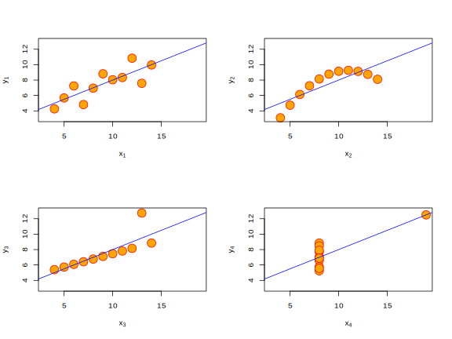

5 데이터 시각화
학습 목표
- R에서 기본으로 제공하는 그래프 생성 개념 및 관련 함수의 의미 및 사용 방법에 대해 학습한다.
- Grammar of graphics를 기반으로 개발된 ggplot2 패키지에 대해 알아보고 사용 방법을 학습힌다.
“The simple graph has brought more information to the data analyst’s mind than any other device.”
\(\rightarrow\) John Tukey
- 그래프는 생각보다 더 많은 정보를 제공
- 데이터 분석 시 통계량 만으로 데이터의 속성을 결정하는 것은 매우 위험(예: Anscombe’s quartet 데이터 예제)
## x1 x2 x3 x4 y1 y2 y3 y4
## 9.000000 9.000000 9.000000 9.000000 7.500909 7.500909 7.500000 7.500909## x1 x2 x3 x4 y1 y2 y3 y4
## 3.316625 3.316625 3.316625 3.316625 2.031568 2.031657 2.030424 2.030579## null device
## 1

Figure 5.1: Anscombe’s quartet: https://goo.gl/Ugv3Cz 에서 스크립트 발췌
- 시각화는 분석에 필요한 통계량 또는 분석 방법론에 대한 가이드를 제시
- 인간의 뇌 구조 상 추상적인 숫자나 문자 보다는 그림이나 도표를 더 빨리 이해
- 다른 통계 패키지(SPSS, SAS, STATA 등)와 비교할 수 없을 정도로 월등한 성능의 그래픽 도구 및 기능 제공